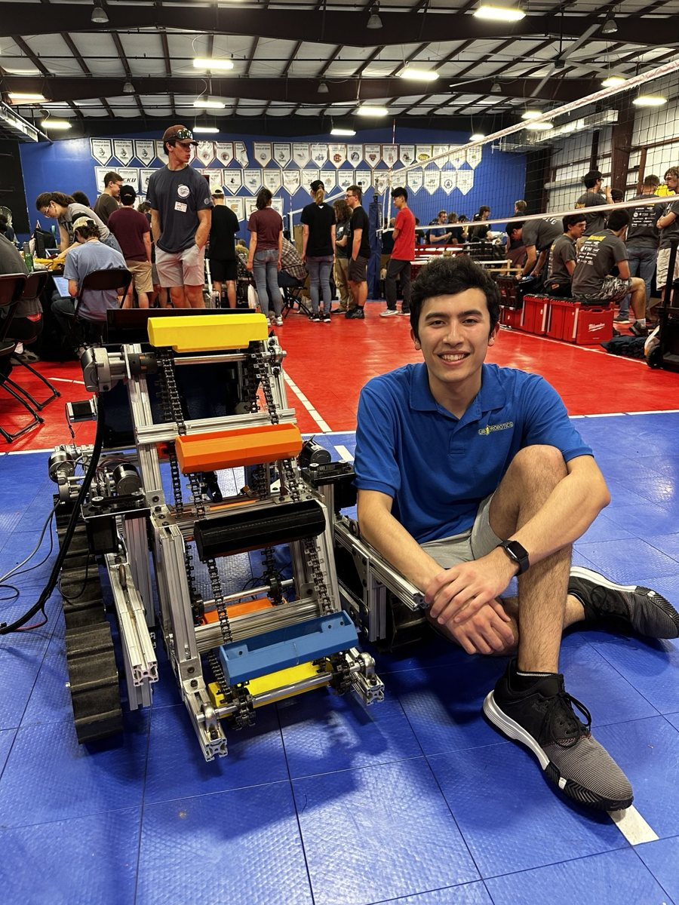
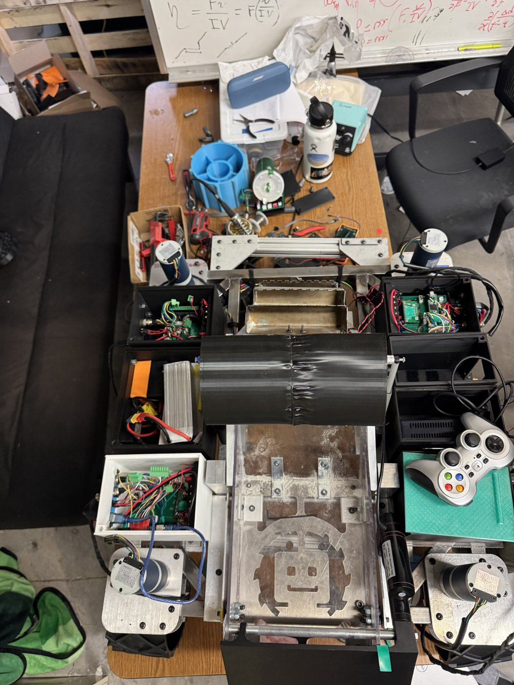
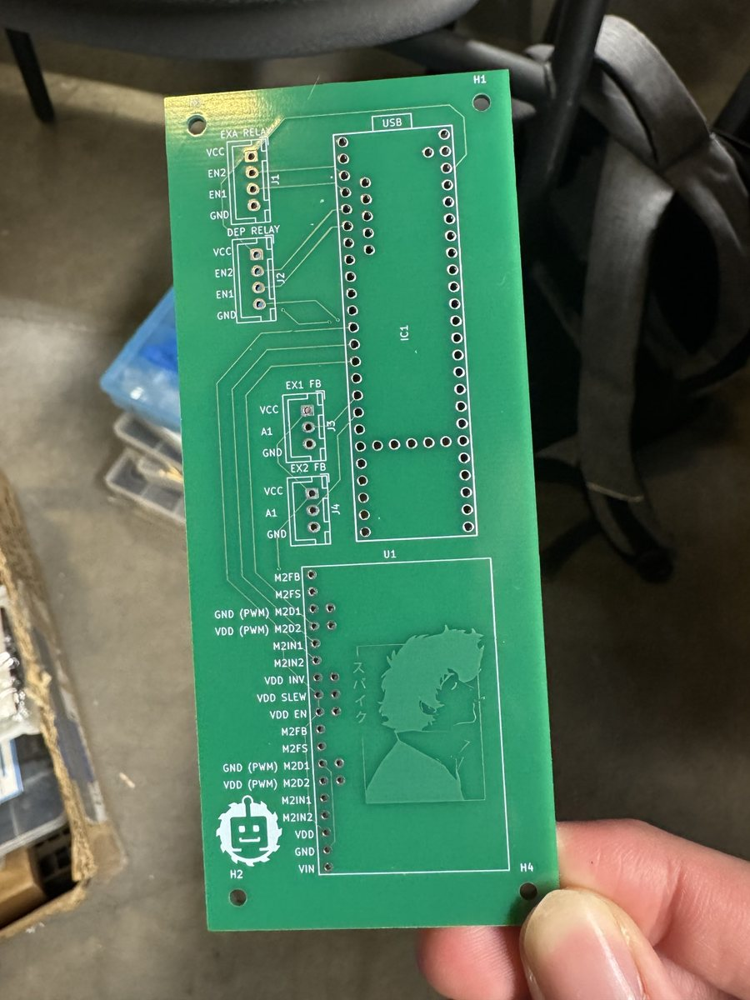
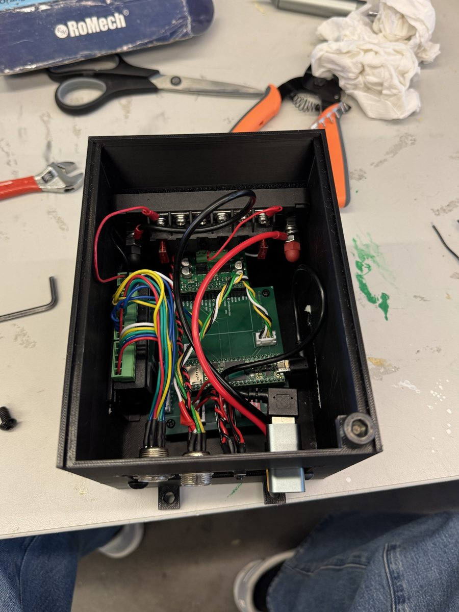
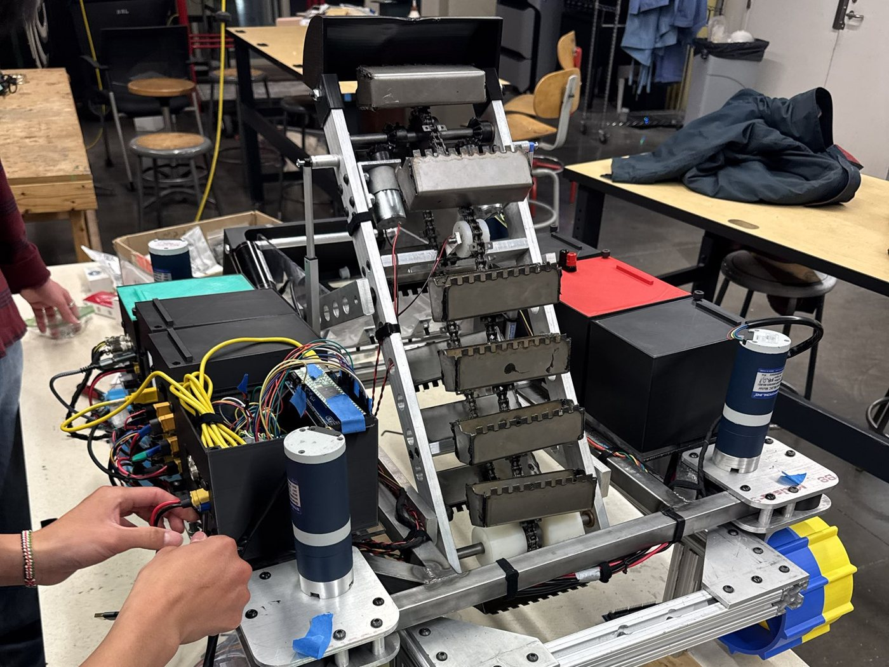
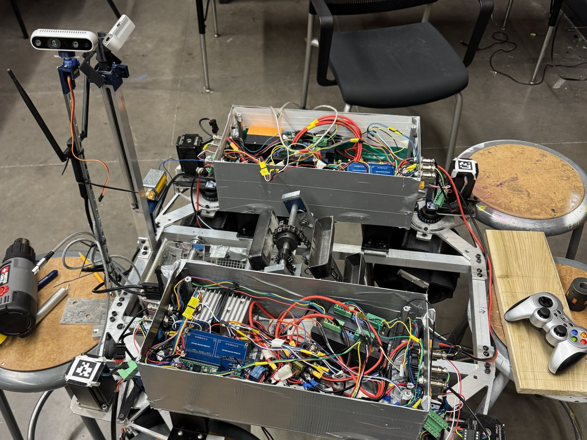
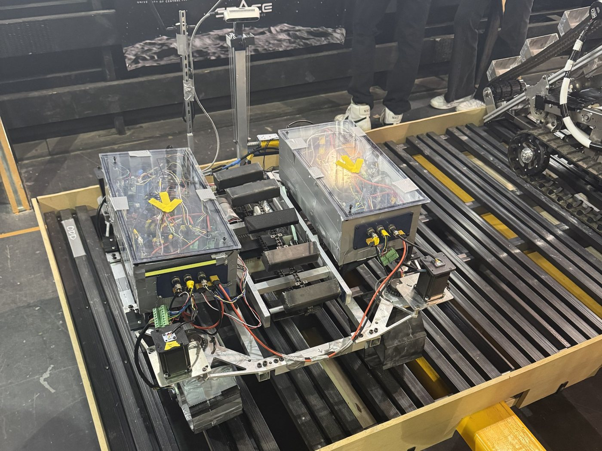

UR Robotics Club: Lunabotics Robot
A lunar construction robot built by the University of Rochester team for NASA's Lunabotics competition at the University of Central Florida and Kennedy Space Center.
- My role
- President (2025–26), Co-Vice President (2024–25), team member (2026–27)
- Advisor
- Professor Howard
- Focus
- Drive firmware, ROS2 software, electronics
- Tools
- ROS2 Jazzy, C++, Arduino Mega, Dynamixel

Overview
[Two or three sentences on the competition goal, what the robot has to do, and how the team is organized.]
Swerve drive firmware
I wrote the firmware for the robot's swerve drive on an Arduino Mega, controlling a BLDC motor through a BLDC405S driver alongside a DC gear motor with quadrature encoder feedback. Getting it reliable meant reconfiguring Timer4 PWM to about 31 kHz, setting up hall sensor interrupts, adding coast guards on direction changes to keep the drivers out of their safety mode, and tuning PID loops for drive control. The full drive system came up under teleop for its first complete test.

ROS2 teleop and camera streaming
I developed a ROS2 C++ teleop node that publishes motor commands, and set up compressed image transport so the operators get a usable camera feed over limited bandwidth.
Electronics and hardware
My earlier work on the team was PCB design and the electronics housing and wire management for the robot.


Related project
Our rover getting stuck in regolith simulant became the motivation for my ME 241 team project, a single wheel testbed that measured how tread patterns affect traction on sand. See the W.H.E.E.L.S. tread traction study.
Gallery


